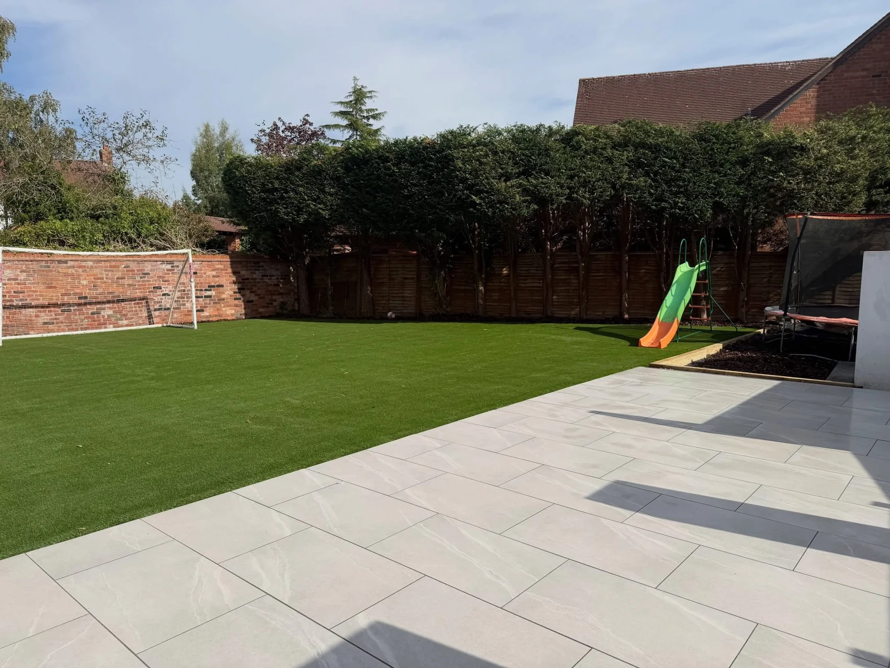
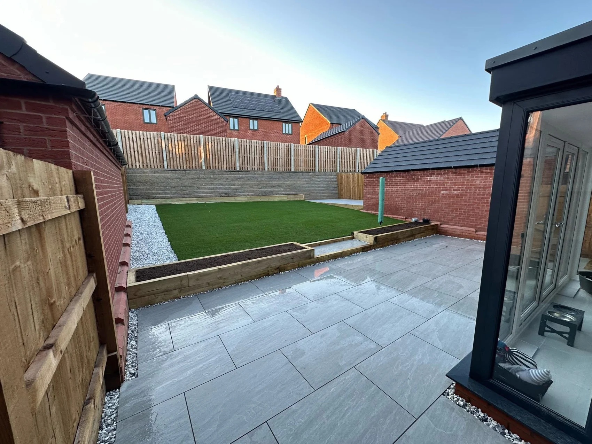
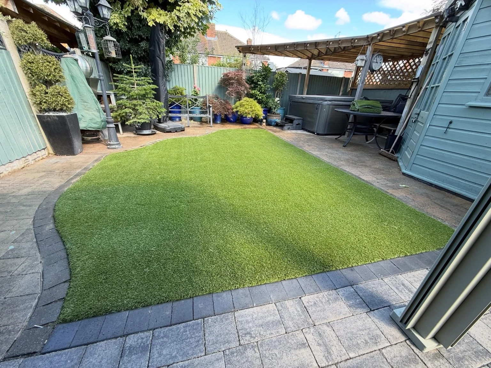
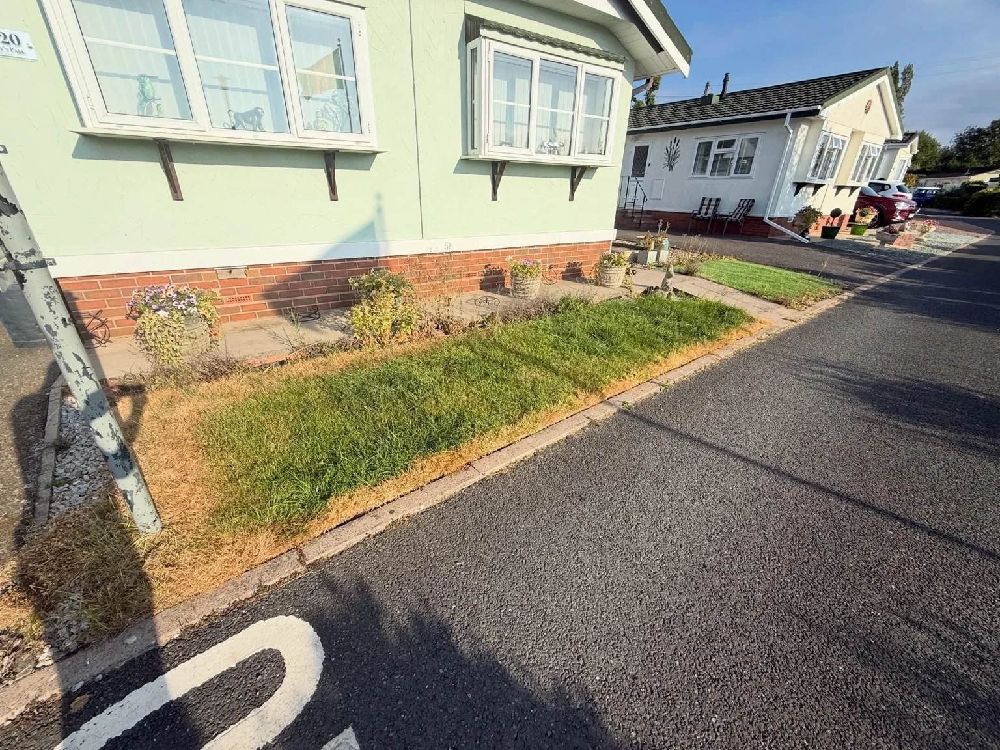
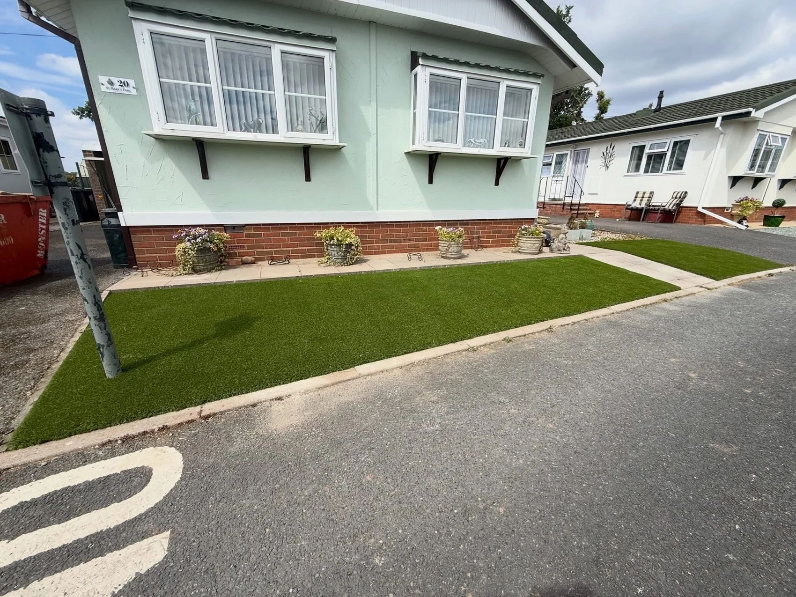

LEVEL & LAY LANDSCAPING · BIRMINGHAM
Your space.
Our craft.
Beautifully considered gardens, patios and artificial lawns. Professional landscaping across Birmingham and surrounding areas.
YOUR SPACE, OUR CRAFT
A place to unwind.
A garden to enjoy.
Level & Lay Landscaping Ltd creates outdoor spaces across Birmingham and surrounding areas. From a fresh artificial lawn to paving and a complete garden transformation, we bring the details together around how you use your space.
Discuss your garden →
ROOM TO LIVE OUTDOORS
From family time
to quiet moments.
A lawn for play. A patio for summer evenings. Thoughtful boundaries between every part of the garden.
Explore garden landscaping →
OUR PROJECTS
Outdoor spaces, transformed.
Real work from Level & Lay.
BEFORE & AFTER
A fresh start
for the front garden.
Compare the original lawn with the finished artificial grass and defined edges at the same property.


TAKE A LOOK AROUND
Our work. In motion.
See our garden transformations take shape. Play a video to explore the work.
BEFORE WE BEGIN
Your garden questions.
Where do you work?
We serve Birmingham and surrounding areas. Send your postcode to confirm coverage.
Can I combine paving and artificial grass?
Yes. Share your ideas for the whole garden so we can discuss the layout, lawn areas and paving together.
Can I send photographs?
Yes. The form prepares a WhatsApp draft. Attach garden photographs before reviewing and sending your message.
How do I request a quote?
Call or WhatsApp with your postcode, approximate measurements and the changes you have in mind.
FREE, NO-OBLIGATION QUOTE
Let’s talk about your outdoor space.
Tell us what you have in mind. This form opens a WhatsApp draft with all your details, ready for you to review, add photos and send.